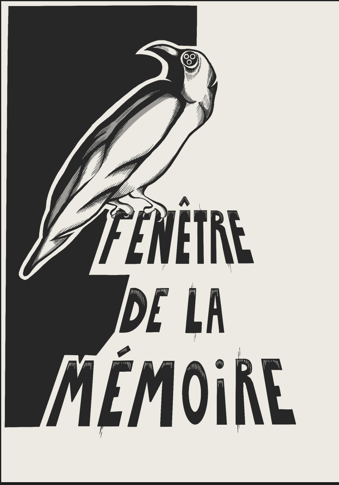

Expérience VR | Juin 2026
La Fenêtre de la Mémoire
C'est une expérience en réalité virtuelle qui immerge le joueur dans la situation de son personnage. Il se retrouve donc allongé dans un cercueil qui va introduire le gameplay à travers le casque de réalité virtuelle. On y suit l'histoire d'une mère de famille qui assiste à ses propres funérailles pendant le 20e siècle. Elle a l'occasion de voir son entourage à différentes temporalités de son époque. Ce qui nous permet de découvrir les différents personnages et les liens qu'ils entretiennent avec notre personnage, Edith Gilbert. C'est un projet de fin d'études réalisé en équipe de 3 personnes pour mon bachelier en arts plastiques, visuels et de l'espace dans les Arts numériques à l’ESA Saint-Luc Bruxelles. De mon côté je me suis principalement concentré sur toute l'installation physique, la décoration du masque VR imprimé en 3D. Je me suis occupé de l'audio dans le jeu. Notamment avec le doublage, les bruitages. Du côté de la musique, c'est William Escande qui l'a réalisé et je me suis occupé de le guider afin de réaliser une bande-son adaptée au jeu.


